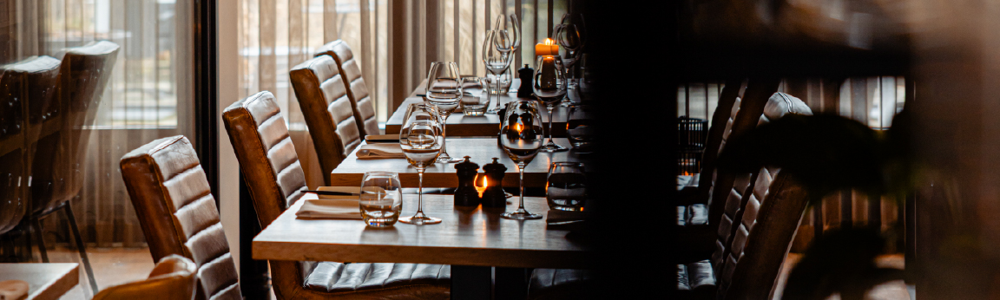
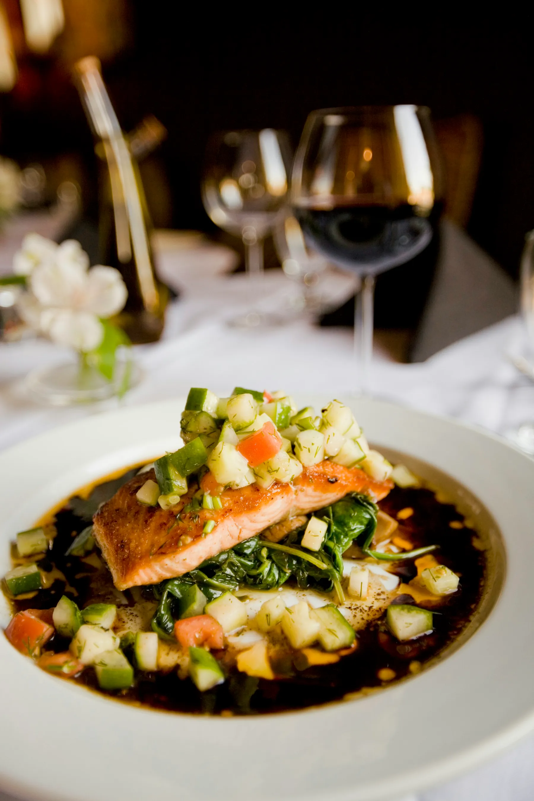

Restaurant aan het Sluisplein, Leidschendam
Bij Erik
Michelin Bib Gourmand sinds 2015, voor een perfecte prijs-kwaliteitsverhouding

- 350 wijnen op de kaart
- 30 wijnen per glas
- Lunch en diner vanaf 12:00, dinsdag gesloten
Welkom bij Restaurant Bij Erik
In ons sfeervolle, vernieuwde restaurant ervaart u de persoonlijke aandacht voor onze gasten, die wij het graag naar de zin maken.
Ook ons menu kreeg een make-over. U kiest uit voor-, tussen-, hoofd- en nagerechten, waarbij sommige klassiekers hun rentree maken en er vele nieuwe gerechten te vinden zijn. Alles geïnspireerd door het seizoen en de moderne gastronomie. Onze signatuurgerechten ontbreken niet, en u kunt zich nog steeds laten verrassen met een menu van de chef.
Dit alles tegen een uitstekende prijs-kwaliteitverhouding, waarvoor wij sinds 2015 de Michelin Bib Gourmand-erkenning hebben. Ook voor een goed glas wijn bent u van harte welkom, als aperitief of bij de borrel met onze uitgebreide biteskaart.

350 wijnen, 30 per glas
Sinds onze verhuizing is de wijnkaart nóg verder uitgebreid. Een glas als aperitief, bij de borrel of bij elke gang: er is altijd iets moois open.
Een greep uit de wijnen per glas
- Mousserend Nik Weis, Riesling Sekt Brut (Mosel) · Philippe Brugnon, 1er Cru Brut (Champagne)
- Wit Italo Cescon, Pinot Grigio (Veneto) · Félix Lorenzo Cachazo, Verdejo (Rueda) · Sieur d'Arques, Chardonnay (Limoux) · Yves Cuilleron, Viognier (Rhône)
- Rosé Martin Codax, Mencía (Bierzo)
- Rood Ravasqueira, Alentejo · Martin Waßmer, Spätburgunder (Baden) · Carlo Baldis, Primitivo (Puglia) · Les Amants de Moulis (Moulis-en-Médoc)
- Zoet en versterkt Château Puy-Servain Terrement, Sémillon (Haut-Montravel) · Henri Giraud, Ratafia Champenois · Quinta da Romaneira, port
Wijnbegeleiding Bij Erik
Op verzoek serveren wij een met zorg samengesteld wijnarrangement.
- Half glas per gang
- 5
- Heel glas per gang
- 9
Kerstmenu 2026
Donderdag 24, vrijdag 25 en zaterdag 26 december
De kerstdagen komen eraan en wij hebben er onwijs veel zin in. Tijdens de lunch serveren wij een 4- of 6-gangenmenu, bij het diner het 6-gangenmenu.
Kerstlunch
4 gangen € 75 of 6 gangen € 110
Ontvangst tussen 12:00 en 13:00 uur.
Kerstdiner
6 gangen € 110
Ontvangst tussen 18:00 en 20:00 uur. Tijdens het diner serveren wij uitsluitend 6 gangen.
Dieetwensen en/of allergieën vernemen wij graag uiterlijk één week van tevoren, zodat wij een passend alternatief kunnen serveren. Gezien de drukte kunnen wij helaas niet met alle restricties rekening houden.
Bij Erik cadeaubon
Onze cadeaubon verzilvert u in één keer, of verspreid over meerdere lunches en/of diners.
- € 50
- € 75
- € 100
- € 150
- € 250
De cadeaubonnen zijn niet te gebruiken in combinatie met andere acties en/of cadeaukaarten.
Cadeaubon bestellen
Evenementen en private dining
Zakelijk iets te presenteren of te bespreken? Een onvergetelijke trouwerij in gedachten? Wees ook welkom voor private dining of andere evenementen.
Wij regelen alles wat u nodig heeft, met dezelfde oprechte gastvrijheid en service, zodat u zich op úw gasten kunt concentreren. We denken graag met u mee en komen met creatieve oplossingen, van BBQ tot kookworkshop.
Gezelschappen, workshops, kooklessen, zakelijke lunches en bijeenkomsten in overleg, op een dag en tijdstip naar úw keuze.
Vraag de mogelijkheden aanWerken bij Bij Erik
Lijkt het je leuk om te werken in een gezellig restaurant met terras, binnentuin, een wisselende menukaart en een mooie wijnkaart? Bij Erik draait alles om gastvrijheid, kwaliteit en een fijne werksfeer. We zoeken altijd enthousiaste mensen, of je nu al ervaring hebt of juist graag wilt leren.
Staat jouw ideale vacature er niet tussen? Stuur gerust een open sollicitatie. Wie weet drinken we binnenkort samen een kop koffie.
- Sous chefUren in overleg, 0 t/m 38 uur
- Zelfstandig werkend kokUren in overleg, 0 t/m 38 uur
- Gastheer / gastvrouwUren in overleg, 0 t/m 38 uur
- Medewerker bedieningUren in overleg, 0 t/m 38 uur
- Interesse? Neem contact op
Reserveren
Reserveer telefonisch of per e-mail. We maken er graag een mooie lunch of diner van.
070 301 04 51 reserveren@bijerik.nlOpeningstijden
- Maandag
- vanaf 12:00
- Dinsdag
- gesloten
- Woensdag t/m zondag
- vanaf 12:00
Adres
Sluisplein 11
2266 AV Leidschendam
Goed bereikbaar. Gratis parkeren in parkeergarage Damplein en in de omliggende straten.